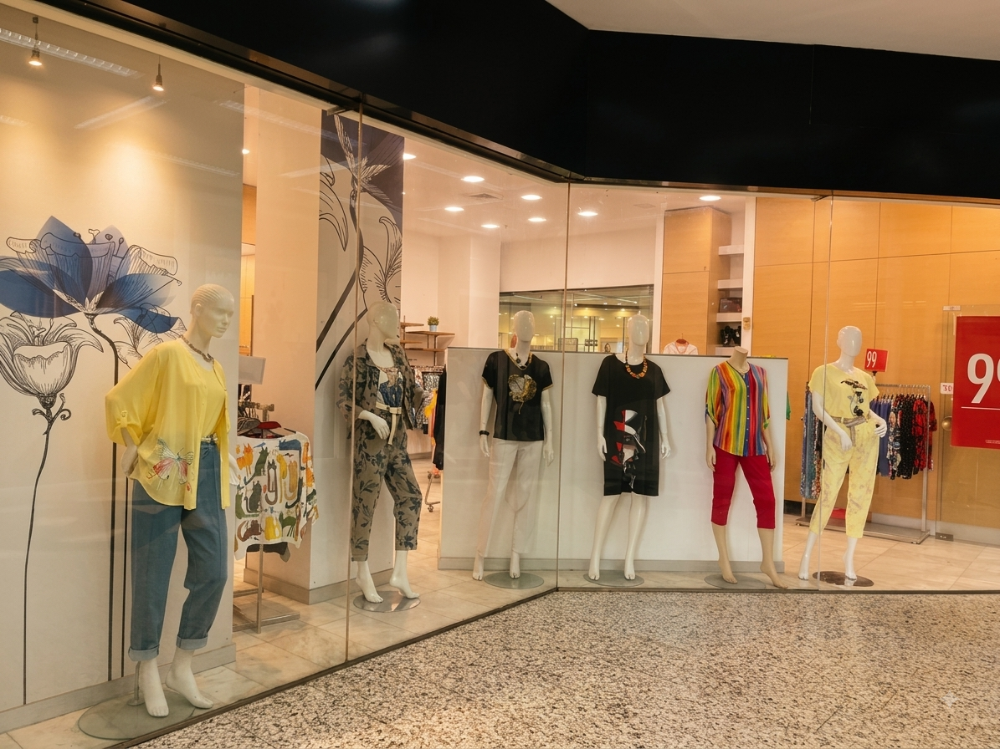
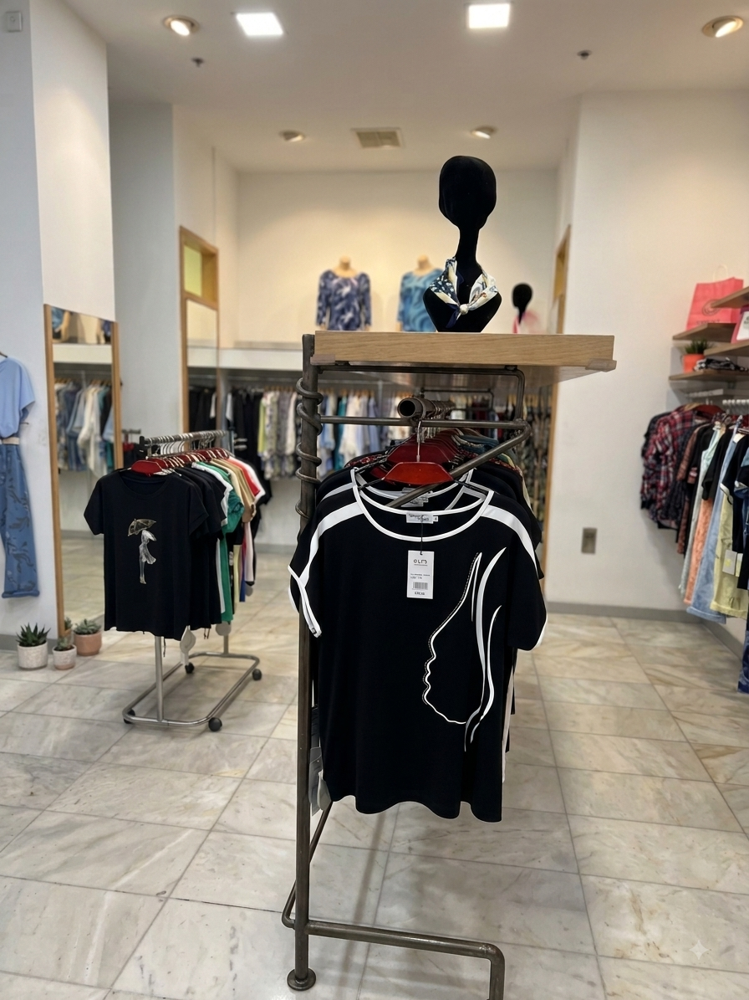

בגן העיר, תל אביב · מ־1986
בריזה
בגדי נשים מיובאים בגן העיר. מבחר שמתחדש כל שבוע, ויחס אישי כבר ארבעים שנה.

הסיפור שלנו
ארבעים שנה באותה פינה
החנות נפתחה כאן ב־1986, ומאז לא זזה. היום אירית מנהלת אותה, עם חלק מאותן לקוחות מהשנים הראשונות.
אנחנו בוחרות כל פריט בעצמנו מהיבואנים, בכמויות קטנות, כך שלא תפגשו את אותה חולצה על כל מי שעוברת ברחוב. אצלנו לא ממהרים.
״הרבה נשים נכנסות רק להגיד שלום. חלק מהן יוצאות עם שמלה.״
מה תמצאו אצלנו
יבוא אישי
מבחר מיובא שנבחר פריט־פריט, מתחדש בכל שבוע.
מידות 38–54
כולל מידות גדולות, עם התאמה במקום.
מחירים הוגנים
רוב הפריטים בין ₪79 ל־₪390, בלי הפתעות בקופה.
ככה זה נראה אצלנו
